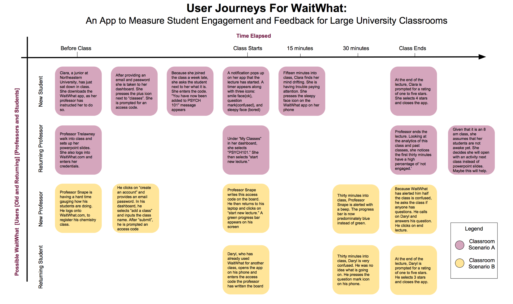

Real-Time Lecture Engagement Measurement
Role
Design Researcher
Duration
1 Semester,
Spring 2016
Final Deliverables
CHI Senior Thesis
Senior Thesis Poster
My undergraduate senior thesis was an in-depth design research project. With the rise of virtual classrooms and large lectures, professors can no longer rely on traditional forms of engagement feedback: eye contact, alert and awake students gleaming back at them, or student participation. Professors and students were both interviewed, surveyed, and asked to participate in research studies to understand the best methods of feedback that are already used and where there could be improvements.
I observed how large lectures that made use of clickers to add audience participation and make them interesting and surveyed professors and students about clickers. In addition, 54 students watched three different online lectures followed by three different feedback mechanisms: freeform feedback, multiple choice relating to their viewing experience, and multiple choice relating to the lecture content. These results were then used in a survey to professors, who could not view the lectures themselves but only the feedback provided by the students, and were then asked to rank the lectures in terms of difficulties and guess where improvements could be made.
The study and surveys revealed that free form feedback is preferred by students but multiple choice questions related to academic content is preferred by professors. However, professors did agree that free form feedback helps note video quality issues that multiple choice questions cannot address. Based on this feedback, user journeys were created to initialize the product creation. However, it can be argued more research needs to be done.